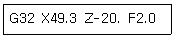
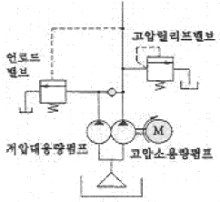
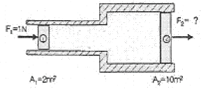

생산자동화기능사 (2006-07-16 기출문제)
1과목: 기계가공법 및 안전관리(대략구분)
1. 선반에서 일감이 깎여 나갈 때에 공구의 뒷면을 원활하게 연속적으로 흘러 나가는 형태의 칩은?
- 유동형 칩
- 전단형 칩
- 경작형 칩
- 균열형 칩
(정답률: 84%)

2. 드릴의 지름 13[mm], 회전수 833[rpm]으로 구멍을 뚫을 때 절삭속도는 얼마인가?
- 15.1 [m/min]
- 17.1[m/min]
- 34 [m/min]
- 43 [m/min]
(정답률: 61%)
3. 브로칭 머신 작업에서 가공내용과 내면 브로칭 가공이나 외면 브로칭 가공을 연결할 때 가공할 수 없는 것은?
- 스플라인 훔 - 내면 브로칭 가공
- 세그먼트 기어 - 외면 브로칭 가공
- 키 훔 - 내면 브로칭 가공
- 베어링용 볼 - 외면 브로칭 가공
(정답률: 50%)
4. 일반적으로 래핑작업에 사용하는 랩체의 종류가 아닌 것은?
- 탄화수소
- 산화철
- 산화크롬
- 흑연가루
(정답률: 65%)
5. 절삭 공구 재료의 구비조건으로 틀린 것은?
- 형상이 만들기 쉽고 가격이 저렴할 것
- 내마멸성이 클 것
- 고온에서도 경도가 떨어지지 않을 것
- 취성이 클 것
(정답률: 73%)
6. 철도 차량용 바퀴만 가공하여 면판 붙이 주축대를 2대 마주 세운 구조로 되어 있는 것은?
- 공구 선반
- 크랭크축 선반
- 모방 선반
- 차륜 선반
(정답률: 75%)
7. WA64-HBV라고 표시된 연삭숫률에서 WA는 무엇을 나타내는가?
- 결함도
- 조직
- 결합제
- 숫돌 입자
(정답률: 67%)
8. 일반적으로 선반의 크기를 나타내는 방법으로 적당치 않은 것은?
- 베드위의 스윙
- 왕복대위의 스윙
- 양센터 사이의 최대거리
- 공작물을 물릴수 있는 척의 크기
(정답률: 61%)
9. 니이 컬럼형 밀링머신의 종류에 해당되지 않는 것은?
- 플래노 밀러
- 만능 밀링 머신
- 수직 밀링 머신
- 편위 밀링 머신
(정답률: 43%)
10. 선반 작업시 안전에 유의할 사항으로 틀린 것은?
- 복장을 단정히 하고 보안경을 착용한다.
- 기계를 사용하기 전에 이상 유무를 확인한다.
- 실습이 끝나면 전원스위치를 끄고 뒷정리를 한다.
- 겨울에는 두꺼운 장갑을 끼고 작업을 한다.
(정답률: 92%)
2과목: 기계제도(대략구분)
11. 압축코일스프링에서 스프링 코일 평균 직경을 [D], 소선의 직경을 [d]라 할 때 스프링 지수 [C]를 구하는 관계식은?
- D x d
- D/d
- 20 x d
- D/(2d)
(정답률: 57%)
12. 금속 소재에 외력을 가해 변형된 후 외력을 제거해도 변형된 상태로 남아 잇는 성질을 의미하는 용어는?
- 탄성
- 인성
- 소성
- 취성
(정답률: 54%)
13. 다음 중 동력 전달용 기계 요소가 아닌 것은?
- 기어
- 마찰차
- 체인
- 유압 댐퍼
(정답률: 57%)
14. 후크의 법칙에서 '응력 = ( ) x 변형률'로 표시된다. 괄호 안에 들어갈 용어로 가장 적합한 것은?
- 안전율
- 비례상수
- 소성
- 압축율
(정답률: 52%)
15. 하중의 크기와 방향이 충격없이 주기적으로 변화하는 하중의 명칭으로 가장 적합한 것은?
- 이동하중
- 교번하중
- 동하중
- 정하중
(정답률: 67%)
16. 실용화 되어 있는 형상기억 합금으로서 가장 대표적인 것은?
- WC-Cu
- Ni-Cr
- Cu-Sn
- Ni-Ti
(정답률: 42%)
17. 표준 스퍼 기어 감속장치와 비교한 웜 기어 감속장치의 특징으로 틀린 것은?
- 전등 효율이 낮다.
- 중심거리에 오차가 있을 때는 마열이 없다.
- 작은 용량으로 큰 감속비를 얻을 수 있다.
- 역회전 방지장치로 사용된다.
(정답률: 46%)
18. 단면의 지름이 40mm인 축에 3000kgf의 인장하중이 작용할 때 발생하는 인장동력은 약 kgf/mm2 인가?
- 1.57
- 2.39
- 3.61
- 4.25
(정답률: 37%)
19. 7:3 청동에 주석 1% 정도를 첨가한 동합금은?
- 망간 황동
- 쾌삭 황동
- 애드미럴티 황동
- 네이멀 황동
(정답률: 56%)
20. 주철의 결점인 여리고 질기지 못한 결점을 보충, 감안한 조직으로 하여 단조를 가능하게 만든 것은?
- 침도 주철
- 회주철
- 가단 주철
- 백주철
(정답률: 70%)
21. 전기로의 용량은 어떻게 나타내는가?
- 1일간 생산되는 용감의 무게
- 1시간에 용해량
- 1회의 용해량
- 1년간 장입된 원료의 총 무게
(정답률: 56%)
22. 다음 중 표면 경화 방법이 아닌 것은?
- 침환법
- 고주파 경화법
- 질화법
- 심냉 처리법
(정답률: 57%)
23. 비중 (약 2.69)이 작은 경금속의 대표적인 것으로 전기 및 열의 전도성이 좋은 금속인 것은?
- 철(Fe)
- 니켈(Ni)
- 구리(Cu)
- 알루미늄(Al)
(정답률: 40%)
24. 너비 3mm, 키의 높이가 5mm, 길이 40mm인 성크 키에서 축과 브스의 경계면에 작용하는 허용 접선력은? (단, 키의 허용 전단응력을 200kgf/cm2라 한다.)
- 30kgf
- 202kgf
- 240kgf
- 330kgf
(정답률: 51%)
25. 다음 중 평벨트와 비교한 V벨트 전동의 특성으로 틀린 것은?
- 끊어졌을 때 접합이 쉽다.
- 이음매가 없어 운전이 정숙하다.
- 지름이 작은 폴리에도 사용이 가능하다.
- 마찰력이 평벨트보다 크고 미끄럼이 적다.
(정답률: 50%)
26. NC용 DC모터의 특성을 열거 하였다. 잘못 된 것은?
- 큰 출력을 낼 수 있어야 한다.
- 가감속 특성이 우수해야 한다.
- 응당성이 좋아야 한다.
- 속도범위가 작아도 안정 되어야 한다.
(정답률: 52%)
27. 스타트업 (Start Up) 블록이란?
- 절삭가공을 시작하는 블록
- 원호가공을 시작하는 블록
- 공구길이 보정을 시작하는 블록
- 공구경 보정을 시작하는 블록
(정답률: 31%)
28. 다음 블록을 수행하여 나사를 가공하였을 때, 이 나사의 리드는 얼마인가?

- 1.5mm
- 2.0mm
- 2.5mm
- 3.0mm
(정답률: 80%)
29. CNC선반에서 나사가공 G기능에 속하지 않는 것은?
- G32
- G76
- G92
- G94
(정답률: 47%)
30. 범용기계에 비교해서 CNC 기계의 경제적 효과를 나타낸 것중 맞지 않는 것은?
- 품질의 균일성 향상
- 공구의 단위 시간당 절삭성 향상
- 초기투자 비용절감
- 복잡한 형상의 부품 가공용이
(정답률: 73%)
3과목: 메카트로닉스 일반(대략구분)
31. 다음 NC프로그램 준비기능 중 공구길이 보정은?
- G40
- G41
- G42
- G43
(정답률: 34%)
32. 다음 중 DNC시스템의 구성요소에 해당 되지 않는 장치는?
- 컴퓨터
- 통신선
- 공작기계
- 테이프 펀치
(정답률: 77%)
33. 주축에서 공구를 삽입하기 위하여 드럼이나 매거진이 풀고 자동 공구교환장치가 공구를 꺼내어 축에 끼운다. 이때 자동 공구 교환장치를 무엇이라고 하는가?
- ATC
- APT
- NCT
- ACT
(정답률: 72%)
34. 컴퓨터의 기본 구성 중 시스템의 모든 장치를 제어하고 연산을 수행하는 부분은?
- 입력장치
- 중앙처리장치
- 출력장치
- 기억장치
(정답률: 88%)
35. CNC공작기계의 제어에 사용되는 코드에서 M 다음에 2자리 숫자를 붙여 지령하며 주로 ON/OFF 의 기능을 수행하는 것은?
- 주축기능
- 준비기능
- 보조기능
- 공구기능
(정답률: 53%)
36. 유압액츄에이터의 특징으로 바르지 못한 것은?
- 사용하는 유체가 압축성이다.
- 사용하는 압력이 고압이다.
- 작동유를 다시 회수하여 사용한다.
- 응답성이 뛰어나다.
(정답률: 44%)
37. 유압유의 온도 변화에 대한 점도의 변화량을 표시하는 것은?
- 점도
- 점도지수
- 비열
- 비중
(정답률: 83%)
38. 전진 운동과 후진 운동을 할 때 실린더 피스톤이 낼 수 있는 힘의 크기가 같은 실린더는?
- 단봉실린더
- 편로드 복동실린더
- 양로드 복동실린더
- 쿠션내장형실린더
(정답률: 82%)
39. 다음 유압회로의 회로 명칭은?

- Hi-Lo회로
- 로크회로
- 재생회로
- 축압기회로
(정답률: 51%)
40. 회로의 최고압을 제어하든가, 또는 회로의 일부 압력을 감압해서 작동목적에 알맞은 압력을 얻는 유압 회로는?
- 압력제어회로
- 속도제어회로
- 무부하회로
- 압력유지회로
(정답률: 71%)
41. 유압 장치에서 사용되는 오일의 요구 조건으로 알맞지 않은 것은?
- 거품성 기포가 잘 발생될 것
- 윤활성이 우수할 것
- 화학적 안정성이 높을 것
- 가격이 쌀 것
(정답률: 78%)
42. 다음 그림에서 2개의 피스톤 ①, ②의 단면적 A1, A2를 각각 2m2. , 10m2 라고 한다. F1 으로 1N 힘으로 가할 때 F2 의 생성되는 힘은 몇 N인가?

- 5
- 10
- 20
- 4
(정답률: 65%)
43. 공압장치 내에 이물질이 들어가지 못하도록 입구에 설치하는 기기는?
- 공기 건조기
- 공기 여과기
- 공기 탱크
- 냉각기
(정답률: 84%)
44. 기계적 에너지를 유압 에너지로 바꾸는 장치는?
- 유압 펌프
- 액추에이터
- 오일 냉각기
- 유압제어 밸브
(정답률: 77%)
45. 압력 제어 밸브의 특징이 아닌 것은?
- 안전한 공기 압력을 공급 한다.
- 공압 기기의 인내성, 신뢰성을 확보 한다.
- 적정한 공압을 사용하여 압축공기의 소모를 방지한다.
- 장치가 소정 이상의 압력으로 될 때는 공압 펌프를 작동시킨다.
(정답률: 70%)
46. 다음 중 자동화의 단점을 설명한 것으로 틀린 것은?
- 시설투자비 및 운영비로 자동화비용이 많이 필요하다.
- 설계 설치, 운영 및 보수유지 등에 높은 기술 수준을 요구한다.
- 기계가 전문성을 갖게 되는 것이므로 생산 탄력성이 결여된다.
- 설비가 범용성을 갖게 되고 생산성이 향상되어 원가가 절감된다.
(정답률: 64%)
47. 주변기기를 사용하여 프로그램을 메모리에 입력시키는 것은?
- 로딩
- 코딩
- 디버그
- 리프레쉬
(정답률: 69%)
48. 다음 중 공압모터의 장점이 아닌 것은?
- 회전수 및 토크를 자유롭게 조정.
- 에너지 변환효율이 낮다.
- 과부하에도 위험성이 적다.
- 폭발의 위험성이 없다.
(정답률: 63%)
49. 다음 중 서보기구가 사용되지 않는 제어는?
- 수차, 증기터빈의 속도제어
- 공작기계의 위치결정 제어
- 선박의 방향제어
- 자동평형 기록
(정답률: 30%)
50. 되먹임 제어에서 목표값과 다르게 제어량을 변화시키는 요소는?
- 동작신호
- 기준입력
- 외란
- 출력
(정답률: 80%)
51. 릴레이 시퀀스도를 직접 표시할 수 있는 PLC프로그램 언어는?
- SFC(Sequential Function Chart)
- IL(Instruction List)
- LD(Ladder Diagram)
- ST(Structed Text)
(정답률: 67%)
52. 유연 생산시스템 (FMS)의 특징이라 볼 수 없는 것은?
- 단품이나 유사한 제품을 대량으로 생산하는 방식이다.
- 제품의 수명이 짧아지고 고객의 요구가 다양해짐에 따라 이에 적절히 대처할 수 있다.
- 다양한 제품을 동시에 처리하므로 수요의 변화에 유연하게 대처할 수 가 있다.
- FMS의 형태는 생산되는 대상 제품의 종류와 양에 따라 다양한 형태가 있다.
(정답률: 57%)
53. PLC구성 중 시퀀스회로의 프로그램 내용을 기록 저장하는 곳은?
- 중앙처리장치(CPU)
- 입·출력부
- 기억부(Memory)
- 전원부
(정답률: 81%)
54. 근접센서(Proximity Sensor)의 특징이 아닌 것은?
- 고속응답
- 내환경성
- 접촉식검출
- 무접점출력
(정답률: 64%)
55. 다음 중 계전기 제어반과 비교했을 때 프로그램형 제어기(Programmable Logic Controller)의 특징이 아닌 것은?
- 무접점 이므로 수명이 길다.
- 소형화가 곤란하고 신뢰도가 낮다.
- 제어내용의 변경이 용이하다.
- 시스템확장이 용이하다.
(정답률: 83%)
56. 용량형 센서에서 센서의 표면적을 2배로 하면 정전용량은 몇 배가 되는가?
- 1/2
- 2
- 4
- 8
(정답률: 56%)
57. 다음 중 자동화의 5대 요소가 아닌 것은?
- 센서
- 신호변환기
- 네트워크
- 소프트웨어
(정답률: 44%)
58. 폐 회로 시스템의 오차에 대한 식으로 올바른 것은?
- 오차 = 실제값 - 설정값
- 오차 = 외란 + 실체값
- 오차 = 제어출력 + 에너지
- 오차 = 외란 + 제어출력
(정답률: 80%)
59. 공장자동화에 손쉽게 많이 사용되는 엑추에이터(actuator)는?
- PLC
- 근접센서
- 리밋스위치
- 공압실린더
(정답률: 60%)
60. 다음 중 로봇의 분류에서 동작 형태에 따른 분류가 아닌 것은?
- 직각 좌표계 로봇
- 원통 좌표계 로봇
- 극 좌표계 로봇
- 수치제어 로봇
(정답률: 57%)